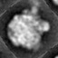
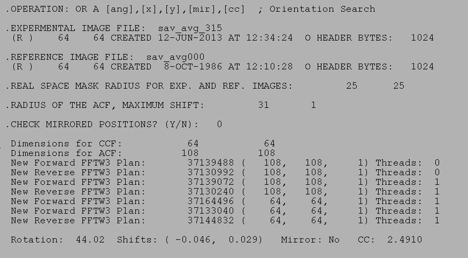

| .OPERATION: | OR A [ang],[x],[y],[m],[cc] | ; Orientation Search |
| .EXPERMENTAL IMAGE FILE: | sav_avg_315 | ; Experimental image (input) |
| .REFERENCE IMAGE FILE: | sav_avg000 | ; Reference image (input) |
| .REAL SPACE MASK RADIUS FOR EXP. AND REF. IMAGES: | 25, 25 | ; Real space mask radius for exp and ref images |
| .RADIUS OF ACF, MAXIMUM SHIFT: | 31, 5 | ; Radius of acf, maximum shift |
| .CHECK MIRRORED POSITIONS? (Y/N): | No | ; Do not check mirrored image |
| Exp. Image | Ref. image |
|---|---|
|  |
| sav_avg000 | sav_avg_315 |
| Only output is to operation line registers: |
|---|
| [ang] | [x] | [y] | [mir] | [cc] |
|---|---|---|---|---|
| 44.02 | -0.05 | 0.03 | 0.0 | 2.49 |
| RESULTS FILE |
|---|
|  |